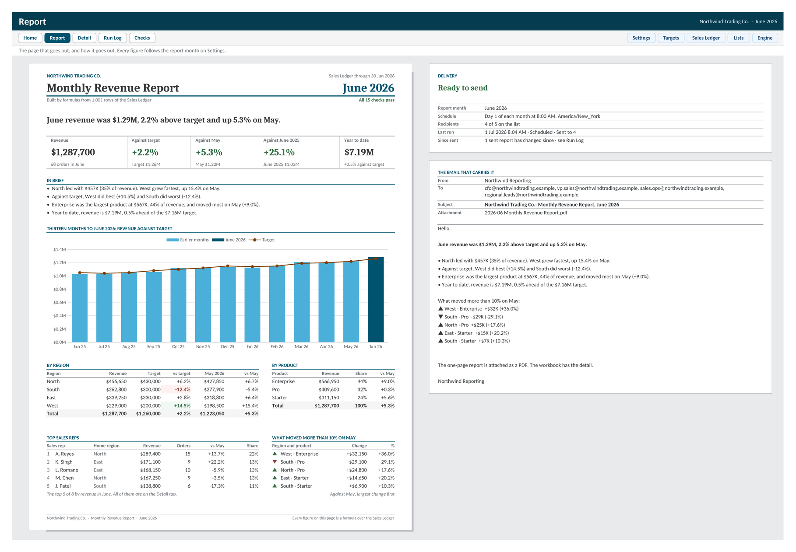

Automated Monthly Report System
A one page monthly revenue report that builds itself from a sales ledger. The workbook writes the headline and the commentary, marks what moved more than a threshold, and runs 15 checks. In Google Sheets a script emails the page as a PDF on a schedule, holds the send when a check fails, and logs every run. An Excel version carries the same report.

The sample is Northwind Trading Co., a fictional company with four sales regions, three products, and eight sales reps. Its Sales Ledger holds 1,001 orders from January 2025 to June 2026, and Targets holds a target for each region and month. Settings names the report month, and everything else follows from it: the month before, the same month a year earlier, the year to date, and the thirteen months on the chart.
The Report tab is the page itself, laid out as a sheet of paper: a masthead, a headline, five figures in a ruled band, four sentences of commentary, thirteen months against target, and tables by region, product, sales rep, and what moved. Every figure is a formula over the ledger, and so is every sentence, so the page for a new month is written the moment the month changes. Beside the page sit the delivery status and the email that carries it.
In the Google Sheets edition a script does the sending. On the day and hour set on Settings it moves the report month forward, tests the checks, and emails the recipients the commentary with the page attached as a one page PDF. If a check fails, nothing goes to the recipients: the owner gets the reason, and the Run Log records the send as held. A Report menu sends a test to the owner, sends the report on demand, and turns the schedule on or off.
Fifteen checks sit between the ledger and a send: the regions, products, and sales reps must add up to the ledger, every row must match the lists, and the month must have data and a target. The Run Log keeps the revenue each report went out with and shows when the ledger has changed since, as it has here for February, where a credit note was booked after the report went out. Northwind Trading Co. is fictional and every figure is illustrative.